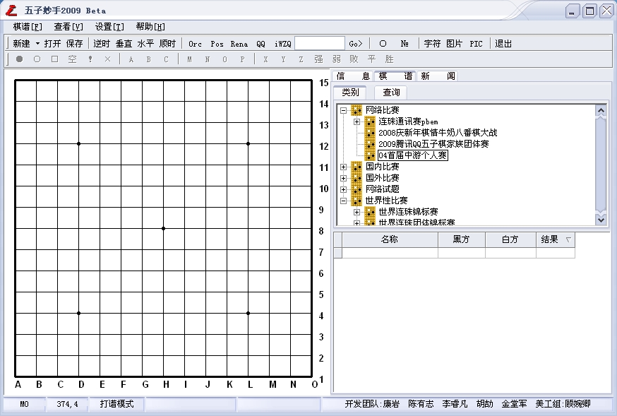

五子妙手2009 Beta发布！
首页
五子棋软件
#1 五子妙手2009 Beta发布！ 作者：小丸.net 发表时间：2009-4-23 21:56:02
************************************************************************
软件名称：五子妙手 互动棋谱管理软件
软件版本：V2009 beta
软件作者：康岩[小丸.net]
软件类型：免费软件(永久免费)
************************************************************************
软件简介：五子妙手是五子棋爱好者不可少的研习打谱软件，他强大的研谱、棋谱管理功能可以为您在学习五子棋时起来事半功倍的作用。
友情提醒：如果你安装过妙手以前的版本，在安装妙手V2009之前先备份您原来版本中的自己的棋谱。
开发历史：
V2009 beta
1.重新整理了所有的棋谱
2.增加了新闻中心，能够让您快速的浏览与五子棋有关的新闻
3.重写了所有的帮助文档
4.修改版本显示方式
5.对界面与菜单作了一些调整
6.修正了修改棋盘路数时棋星位置显示错误的BUG

本软件经江民杀毒软件检查无毒，可放心使用。
点击这里下载
爱五子棋网下载
V3.5 正式版
1.修改了一些小BUG
2.新增自动播放功能.可以自动播放盘面上的棋谱
3.修改成了集成环境,增强棋谱的管理
［ 逆刃 于 2009-4-23 22:03:57 时奖励此帖[金币加 20 威望加1］
［ 岳麓小棋后 于 2009-4-23 22:06:38 时花20金币送鲜花一朵］
［ 清逸 于 2009-4-24 7:26:12 时花20金币送鲜花一朵］
［ gerbo 于 2009-6-3 14:13:19 时花20金币送鲜花一朵］
#2 Re:五子妙手2009 Beta发布！ 作者：茗弈小刀 发表时间：2009-4-23 22:01:51
这是个好软件！谢谢丸子！
#3 Re:五子妙手2009 Beta发布！ 作者：南京杨帆 发表时间：2009-4-23 22:02:41
好东西，收咯！
#4 Re:五子妙手2009 Beta发布！ 作者：忧郁的双眼 发表时间：2009-4-23 22:18:32
为什么要先备份？
难道说它会吞了我的谱？
怕怕 我还是不用它了
#5 Re:五子妙手2009 Beta发布！ 作者：nara 发表时间：2009-4-23 22:25:30
不错的软件，谢谢丸子哥！这次又加入了不少棋谱。支持了！
不过好像用鼠标点击的时候，好像鼠标没有自动出现在下一手的位置上？还有鼠标好像在棋盘下面，看得有点眼酸（个人感觉）！不知道能不能调整？
［ 失落刀 于 2009-4-23 22:29:02 时花20金币送鲜花一朵］
感谢提意见。
#6 Re:五子妙手2009 Beta发布！ 作者：潇洒 发表时间：2009-4-23 22:28:03
谢谢小丸 不错
支持下
#7 Re:五子妙手2009 Beta发布！ 作者：黄药师 发表时间：2009-4-23 23:39:23
 看到警告，吓得我一身冷汗～～～～～
看到警告，吓得我一身冷汗～～～～～
#8 Re:五子妙手2009 Beta发布！ 作者：踵酃 发表时间：2009-4-24 4:08:06
这东西看起来很有趣， 试试看~~希望能用~~
#9 Re:五子妙手2009 Beta发布！ 作者：清逸 发表时间：2009-4-24 7:24:34
 下载不了！提示：“ 糟糕！ 此BY已p。”
下载不了！提示：“ 糟糕！ 此BY已p。”
#10 Re:五子妙手2009 Beta发布！ 作者：小丸.net 发表时间：2009-4-24 7:56:59
麻烦有志哥帮我下载了上传一个在爱五子棋服务器。谢谢
http://blog.wtceo.cn/jsfive.rar
#11 Re:五子妙手2009 Beta发布！ 作者：茗弈梓轩 发表时间：2009-4-24 9:24:24
目前还是不能下载，希望有关人员帮忙解决一下！
#12 Re:五子妙手2009 Beta发布！ 作者：茗弈梓轩 发表时间：2009-4-24 9:31:07
软件很强大！辛苦丸子老师！
#13 Re:五子妙手2009 Beta发布！ 作者：雅典娜 发表时间：2009-4-24 10:42:51
上面有个补充的联接可一下的!
#14 Re:五子妙手2009 Beta发布！ 作者：雅典娜 发表时间：2009-4-24 10:43:54
感谢康师傅! 还是这个味,
#15 Re:五子妙手2009 Beta发布！ 作者：学生刀 发表时间：2009-4-24 10:45:32
这个工具 可不可以做点的标记 c a 必败等
#16 Re:五子妙手2009 Beta发布！ 作者：潇洒 发表时间：2009-4-24 12:07:34
这个软件是棋谱管理工具
#17 Re:五子妙手2009 Beta发布！ 作者：就是爱玩 发表时间：2009-4-24 16:23:48
很好的软件，支持！
#18 Re:五子妙手2009 Beta发布！ 作者：刀魂 发表时间：2009-4-24 17:05:54
 弱弱 的的 问一句。。。这个软件 用来干吗的，只是针对本论坛的棋谱是吗？？？其他格式的棋谱能打开不。。。
弱弱 的的 问一句。。。这个软件 用来干吗的，只是针对本论坛的棋谱是吗？？？其他格式的棋谱能打开不。。。
#19 Re:Re:五子妙手2009 Beta发布！ 作者：小丸.net 发表时间：2009-4-24 20:49:37
引用：
原文由 学生刀 发表于 2009-4-24 10:45:32 :
这个工具 可不可以做点的标记 c a 必败等
在摆谱模式可以的，像RENLIB一样打字上去。但是不能导出谱，只能导出图片。
#20 Re:五子妙手2009 Beta发布！ 作者：英雄九段 发表时间：2009-6-1 23:47:28
软件很强大！辛苦丸子老师！
#21 Re:五子妙手2009 Beta发布！ 作者：lfzxdh 发表时间：2009-6-2 22:34:13
康师傅辛苦啦
继续努力！继续支持！继续更新！哟
#22 Re:五子妙手2009 Beta发布！ 作者：gerbo 发表时间：2009-6-3 14:12:29
非常好的软件.赞一个.如能手动前进/后退到下一手,感觉一定更完美.丸子大哥辛苦了.
#23 Re:五子妙手2009 Beta发布！ 作者：我爱棋 发表时间：2009-6-4 22:11:38
看一看啊，呵呵，
#24 Re:五子妙手2009 Beta发布！ 作者：永不落泪 发表时间：2009-6-7 15:53:12
下载安装了，但是不知道怎么用，那有教材？
#25 Re:五子妙手2009 Beta发布！ 作者：岳麓小棋后 发表时间：2009-6-7 15:55:34
恩，这个软件真的很好，开发团队无偿奉献出来实是心灵大美之人
#26 Re:五子妙手2009 Beta发布！ 作者：黄雪梅 发表时间：2009-6-19 15:58:03
太厉害了9999
#27 Re:五子妙手2009 Beta发布！ 作者：宋杰 发表时间：2009-7-10 11:01:45
终于找到了，谢谢啊。
#28 Re:五子妙手2009 Beta发布！ 作者：xr__ 发表时间：2009-7-11 18:43:42
19路的支持 各种功能基本没有
#29 Re:五子妙手2009 Beta发布！ 作者：小丸.net 发表时间：2009-7-16 9:54:09
请问楼上的，还需要什么功能，我考虑一下能不能做？
#30 Re:五子妙手2009 Beta发布！ 作者：黑白子 发表时间：2009-7-16 13:35:30
楼上的楼上要求比较多，楼上是没有办法满足楼上的楼上的！
#31 Re:五子妙手2009 Beta发布！ 作者：xr__ 发表时间：2009-7-17 13:15:35
楼上的朋友 什么意思
五子妙手 愿意支持19路 关你什么事
#32 Re:五子妙手2009 Beta发布！ 作者：江南新绿 发表时间：2009-8-20 23:54:02
1.刷新问题。缓冲图形，使得在不断打谱的过程中盘面没有闪烁。
2.增加前进后退功能，使之更为通用（自动读谱是一个非常强的功能，赞一个）
3.打谱更方便（目前需要点的很准才能点上，觉得改一下的好）
4.在readme.txt中增加各种默认值的修改方法的说明。
5.参考Multi Go增加一些功能，比如落子的声音，Multi Go太强大了。连录音都有，丸子慢慢学啊。
#33 Re:五子妙手2009 Beta发布！ 作者：杜茆轩 发表时间：2009-8-24 19:58:46
丸子.软件还是有问题- -.哭泣./
#34 Re:五子妙手2009 Beta发布！ 作者：寒夏 发表时间：2009-10-10 13:53:51
看起来不错，下个
#35 Re:五子妙手2009 Beta发布！ 作者：爱好者友 发表时间：2009-10-25 18:17:25
下载不了啦？好可惜啊，能不能再发一次呀？谢谢啦。
#36 Re:五子妙手2009 Beta发布！ 作者：江南新绿 发表时间：2010-3-3 16:55:56
怎么输入DEF 的
#37 Re:五子妙手2009 Beta发布！ 作者：无为无我 发表时间：2010-3-10 18:12:49
好东东就是要顶的
#38 Re:五子妙手2009 Beta发布！ 作者：只需十步 发表时间：2010-3-29 11:58:39
好东西 谢谢
#39 Re:五子妙手2009 Beta发布！ 作者：飞吻乔丹 发表时间：2010-4-13 0:22:42
好久没有打谱了，下来玩玩
#40 Re:五子妙手2009 Beta发布！ 作者：瞻彼淇奥 发表时间：2010-4-14 15:00:08
 链接又坏了吗？下不了啦！！！
链接又坏了吗？下不了啦！！！
#41 Re:五子妙手2009 Beta发布！ 作者：破李小弟 发表时间：2010-5-10 14:01:51
支持一下
#42 Re:五子妙手2009 Beta发布！ 作者：龙小小 发表时间：2010-5-10 20:45:51
#43 Re:五子妙手2009 Beta发布！ 作者：留声机 发表时间：2010-6-11 17:00:44
用这个打开qq的棋谱貌似有点问题。。。
#44 Re:五子妙手2009 Beta发布！ 作者：小丸.net 发表时间：2010-6-20 1:17:30
回楼上，这个不是打谱软件问题，而是棋谱的问题，因为如果用QQ游戏本身的打谱器打开的话，也会出现这种问题的。QQ游戏一直没有解决这个问题。所以我们很纠结。
#45 Re:五子妙手2009 Beta发布！ 作者：雪俏芳菲 发表时间：2010-8-15 15:37:26
谢谢共享，下个学习学习
#46 Re:五子妙手2009 Beta发布！ 作者：巫山云雨 发表时间：2010-10-19 14:50:13
不错不错支持一下，五子棋爱好者的福音
#47 Re:五子妙手2009 Beta发布！ 作者：子起云涌 发表时间：2011-7-5 12:32:50
这是个好软件！谢谢丸子！
#48 Re:五子妙手2009 Beta发布！ 作者：肖剑锋 发表时间：2012-4-6 6:52:35
能显示禁手吗？
#49 Re:五子妙手2009 Beta发布！ 作者：天下至尊 发表时间：2012-10-3 14:42:07
呵呵，下来试试看好用吗，谢谢楼主。